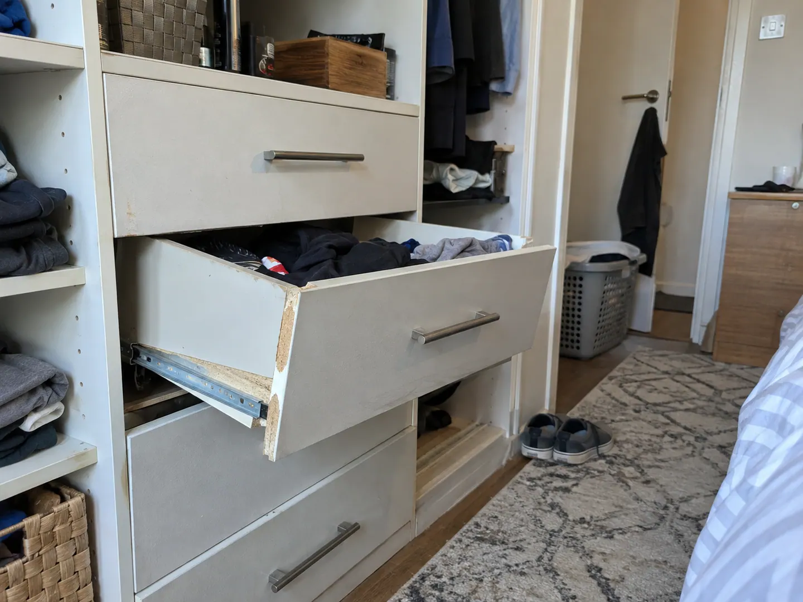

Work example · Southern Corridor region
Drawer Runner Replacement in the Southern Corridor
Damaged drawer runners were replaced in the Southern Corridor region. The before and after photographs show the affected drawer and its presentation after the confirmed runner replacement.
The work shown
Cabinet & Wardrobe Repairs
Damaged drawer runners were replaced in the Southern Corridor region. The before and after photographs show the affected drawer and its presentation after the confirmed runner replacement.
Scope
Replacement of damaged runners on the existing drawer shown. The supplied work record confirms runner replacement; it does not establish replacement of drawer boards or the surrounding wardrobe.
Outcome
The after photograph shows the drawer in position with its visible runner. Only before and after views are available here; they do not show the fitting process or establish long-term performance.
Project gallery
Before and after the work


Contact Ellis Perth
Request an assessment for your property
Contact Ellis directly to arrange an on-site assessment. Tell us which fitting needs attention and your suburb or postcode. Existing photos and approximate measurements are optional; we inspect the property, discuss the options and provide a written quote for the agreed work.